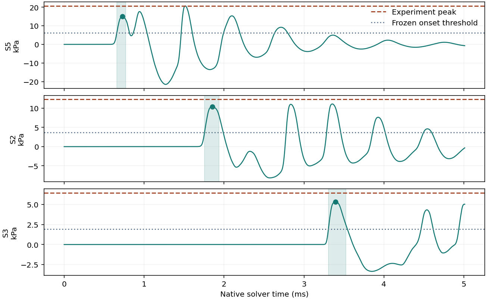
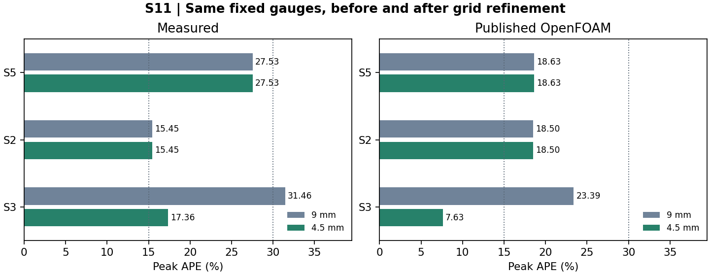

C 集群作业 8976290，cnode1806。已核对实际探针坐标、MPI 采样面和原生时钟。 原生求解正常结束，固定测点完整交付 0–5 ms，逐步压力和温度检查通过。 下表只计算事前固定规则已识别的首峰。
| 固定测点 | 实测 kPa | 论文 kPa | 全窗最大 kPa | 固定首峰 kPa | 实测 APE | 论文 APE | 波形判定 |
|---|---|---|---|---|---|---|---|
| S5 | 20.64 | 18.39 | 20.71 | 14.96 | 27.53% | 18.63% | 固定首峰已识别 |
| S2 | 12.30 | 12.76 | 11.10 | 10.40 | 15.45% | 18.50% | 固定首峰已识别 |
| S3 | 6.46 | 5.78 | 5.34 | 5.34 | 17.36% | 7.63% | 固定首峰已识别 |
全固定分母首峰 MAPE。实测 20.11%，论文 14.92%。 分母中有未识别点时，整组 MAPE 留空。全窗最大值用于幅值诊断。APE 只按事前固定首峰计算，人工入选待审核。 原生日志最低绝对压力 691.14 Pa，最低温度 236.58 K。 实测峰值的 ±3 像素图读灵敏度对应 APE S5 23.96%–30.77%，S2 10.43%–19.94%，S3 11.79%–22.27%。

论文原图 · 工况和测点来源 · 原生压力 · 逐项数值与哈希 · 调度回执 · 原始算例和加密区域
